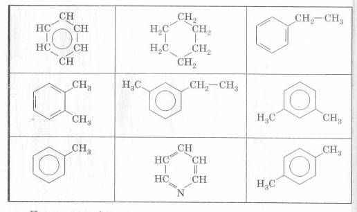
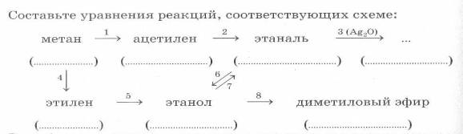

В молекуле альдегида или кетона вследствие большей электроотрицательности атома кислорода по
сравнению с углеродным атомом связь С=0 сильно поляризована засчетсмещения электронной
плотностип-связи к кислороду.
Альдегиды и кетоны — полярные вещества с избыточной электронной плотностью на атоме кислорода.
Низшие члены ряда альдегидов и кетонов (формальдегид, уксусный альдегид, ацетон) растворимы в воде
неограниченно. Их температуры кипения ниже, чем у соответствующих спиртов . Это связано с тем, что в
молекулах альдегидов и кетонов в отличие от спиртов нет подвижных атомов водорода и они не образуют
ассоциатов за счет водородных связей. Низшие альдегиды имеют резкий запах, у альдегидов, содержащих
от четырех до шести атомов углерода в цепи, неприятный запах, высшие альдегиды и кетоны обладают
цветочными запахами и применяются в парфюмерии.
Метаналь (муравьиный альдегид) – бесцветный газ с резким запахом. Раствор метаналя в воде (35-40%)
называется формалином.
I Реакции присоединения.
Для альдегидов характерна реакция гидрирования.Присоединение водорода к молекулам альдегидов
происходит по двойной связи в карбонильной группе. Продуктом гидрирования альдегидов являются
первичные спирты, кетонов — вторичные спирты. Так, при гидрировании уксусного альдегида на никелевом
катализаторе образуется этиловый спирт, при гидрировании ацетона — пропанол-2.
Гидрирование альдегидов — реакция восстановления, при которой понижается степень окисления атома
углерода, входящего в карбонильную группу.
R – CHO + H2 → R – CH2 – OH
R – CH – R1 + H2 → R – CHOH – R1
Для класса альдегидов характерен еще один тип реакции.
II Реакции окисления.
Ребята, вернемся к елочной игрушке, которую мы изготовили. С помощью реакции окисления формальдегида
аммиачным раствором оксида серебра мы и получили красивый серебряный налет на стенках колбы – эта
реакция называется «реакция серебряного зеркала».Вы можете представить себе жизнь без зеркала?
Проснуться утром – и не увидеть своего отражения? Кажется, ерунда, мелочь. А ведь какой душевный
дискомфорт! Недаром сказочных персонажей в качестве наказания лишали отражения. Что такое зеркало? В
чем его сила? Откуда оно появилось? Как его изготавливают?
Как мы уже знаем, первыми настоящими зеркалами служили отполированные до блеска металлические
пластинки из меди, золота, серебра. Однако такие зеркала имели большой недостаток – на воздухе
быстро темнели и тускнели. Какой же выход нашли из этой ситуации? Многочисленные опыты показали, что
блестящий металлический слой можно нанести и на стекло. Так, в I в. н.э. начали изготавливать
стеклянные зеркала – стеклянные пластинки, соединенные со свинцовыми или оловянными пластинами.
Делалось это так: мыли спиртом стекло, очищали его тальком и затем к поверхности плотно прижимали
оловянный лист. Сверху наливали ртуть и, дав ей постоять, сливали избыток. Образовавшийся слой
амальгамы заклеивали или закрашивали. Такие зеркала оказались намного долговечнее металлических,
поэтому ремесленные мастерские перешли на выпуск стеклянных зеркал, отражающая поверхность которых
была сделана из амальгамы олова (раствор олова Sn в ртути Hg). Но, поскольку пары ртути очень
ядовиты, производство ртутных зеркал было весьма вредным, да и сами зеркала содержали ртуть. Было
опасно держать ртутные зеркала в жилых помещениях. Поэтому ученые продолжали искать замену для
ртути. Ее нашли французский химик Франсуа Птижан и великий немецкий ученый Юстус Либих. Они
предложили заменить ртуть серебром.
2[Ag (NH3)2](OH) + HCHO = 2Ag +HCOONH4 + 3NH3 + H2O.
А вторую реакцию окисления я предлагаю провести вам. У вас на столах реактивы и инструкции по
проведению опыта.
В пробирке получить гидроксид меди (+2), добавляя к раствору сульфата меди гидроксид натрия. В ту же
пробирку прилить 3-4 мл раствора альдегида. Осторожно провести нагревание.
НСОН + 2Cu(OH)2 = HCOOH +Cu2O +2H2O
Обратить внимание учащихся на изменение окраски.
Эти реакции являются качественными для альдегидов. Кетоны не окисляются ни кислородом воздуха, ни
таким слабым окислителем, как аммиачный раствор оксида серебра.
Больше информации по данной теме содержится в
учебнике
ПРАКТИЧЕСКОЕ ЗАНЯТИЕ № 5
ТЕМА: АРЕНЫ.
КИСЛОРОДСОДЕРЖАЩИЕ ОРГАНИЧЕСКИЕ СОЕДИНЕНИЯ.СПИРТЫ И ФЕНОЛЫ(ЧАСТЬ1)
Прочтите
соответствующие разделы учебника.[2]
Глава 4. Тема 3.2. Ароматические углеводороды (стр. 57-62)
Ключевые слова: арены, ароматический, бензол, бензольный, конденсированный,
метилбензол, дегидрирование, делокализация, замещаться, замещение, мета-ксилол, орто-ксилол,
пара-ксилол, нафталин, толуол.
ЗАДАЧИ И УПРАЖНЕНИЯ:
- Какие соединения называются ароматическими углеводородами?
………………………………………………………………………………………………………………………………………………………………………………………………………………………………………………………………………………………………………………………………………………………………………………………………………………………………
- Напишите структурные формулы следующих веществ и дайте им другое
название:
1,2-диметилбензол
|
мета-ксилол
|
1,4-диметилбензол
|
|
|
|
- Какие из перечисленных свойств соответствуют бензолу:
a) бесцветнаяжидкость
b) бесцветныйгаз
c) кристаллическоевещество
d) беззапаха
e) с характернымзапахом
f) нерастворим в воде
g) растворим в воде
h) легчеводы
i) тяжелееводы
j) являетсяхорошимрастворителем
- Приведите уравнения этих реакций:
а) C6H6иBr2
б) C6H6 и O2 ;
в) C6H6 иHCl
а) …………………………………………………………………………………………………………
б) …………………………………………………………………………………………………………
в) …………………………………………………………………………………………………………
- При нитровании 39 граммов бензола было получено 50 граммов
нитробензола. Вычислите выход нитробензола в процентах от теоретически возможного выхода?
Решение:
……………………………………………………………………………………………………………………………………………………………………………………………………………………………………………………………………………………………………………………………………………………………………………………………………………………………………………………………………………………………………………………………………………………………………………………………………………………………………………………………………………………………………………………………………………………………………………………………………………………………………………………………………………………………………………………………………………………………………………………………..
|
- Напишите уравнение хлорирования бензола: а) на свету; б) с
катализатором.
a) …………………………………………………………………………………………
b) ………………………………………………………………………………………...
- Перед Вами ряд превращений веществ. Составьте уравнения реакций.
Укажите условия, при которых протекают реакции. Назовите все вещества.
СН4 →С2Н2 → С6Н6 → С6Н5Br
↓
С6Н12
1) ……………………………………………………………………………………………………………………………………………………………………………………………………………………
2) ……………………………………………………………………………………………………………………………………………………………………………………………………………………
3) ……………………………………………………………………………………………………………………………………………………………………………………………………………………
4) ……………………………………………………………………………………………………………………………………………………………………………………………………………………
Закрасьте карандашом клетки, в которых записаны формулы
аренов. Из клеток, соответствующих правильным ответам, получится символ самого распространенного
во Вселенной химического элемента. Подчеркните формулы изомеров.

Рисунок 1- Формулы
ПРАКТИЧЕСКОЕ ЗАНЯТИЕ №5
КИСЛОРОДСОДЕРЖАЩИЕ ОРГАНИЧЕСКИЕ СОЕДИНЕНИЯ.
ТЕМА: СПИРТЫ И ФЕНОЛЫ. (ЧАСТЬ2)
Прочтите
соответствующие разделы учебника.[2]
Глава 6. Спирты. Фенолы. §20-24
(стр.80-95)
Ключевые слова: алкоголят, водородная связь, глицерин,
глюкоза, дрожжи, метанол,фермент, функциональная группа,этанол,этиленгликоль, фенол, фенолят.
ЗАДАЧИ И УПРАЖНЕНИЯ:
- Какие вещества называются спиртами?
……………………………………………………………………………………………………………………………………………………………………………………………………………………
- Продолжите определение: Фенолы – это
производные ароматических углеводородов, в молекулах которых…………………………………………………………………….
- Запишите определения
Функциональная группа ……………………………………………………………………………………………………………………………………………………………………………………………………………………
Общая формула предельных одноатомных спиртов:
……………………………………………………………………………………………………………………………………………………………………………………………………………………
Многоатомные спирты:
……………………………………………………………………………………………………………………………………………………………………………………………………………………
- Напишите структурные формулы всех изомерных спиртов состава C4H9OH. Назовите эти спирты.
……………………………………………………………………………………………………………………………………………………………………………………………………………………………………………………………………………………………………………………………………………………………………………………………………………………………………………………………………………………………………………………………………………………
- Объясните, почему в классе спиртов нет газообразных веществ?
……………………………………………………………………………………………………………………………………………………………………………………………………………………
- Запишит еопределение.
Водородная связь
.…………….………………………………………………………………….…………………………………………………………………………….............................................................................
Изобразите схему образования водородной связи между молекулами:
а) воды б) спирта в) воды и спирта
…………………… …………………… ………………….
…………………… …………………… …………………
…………………… …………………… …………………
- Напишите структурные формулы изомерных ароматических соединений
состава C7H8O и назовите их. Укажите, к каким
классам органических соединений
они относятся.
………………………………………………………………………………………………………………………………………………………………………………………………………………………………………………………………………………………………………………………………………………………………………………………………………………………………………………………………………………………………………………………………...............................
- Перечислите химические свойства фенолов, обусловленные
гидроксильной группой (А) и бензольным ядром (Б). Приведите примеры химических реакций.
А)
…………………………………………………………………………………………….……………………………………………………………………………………………………………………………………………………………………………………………………………………………………………………................................................................................................................................
Б)
…………………………………………………………………………………………….……………………………………………………………………………………………………………………………………………………………………………………………………………………………………………………................................................................................................................................
- С какими из перечисленных веществ будут реагировать фенол и метанол: 1) HBr, 2) Na, 3) NaOH? Напишите уравнения реакций.
................................................................................................................................................................................................................................................................................................................................................................................................................................................................................................................................................................................................................................................................................................................................................................................................................................................................................................................................................................................................
- Как с помощью качественных реакций различить водные растворы
фенола, этанола, и глицерина. Приведите план
распознавания веществ и напишите уравнения реакций.
……………………………………………………………………………………………….…………………………………………………………………………………………………………………………………………………………………………………………………………………………………………………………………………………………………………………………………………............................................................................................................................................................
11. Выпишите области применения одноатомных спиртов и фенолов.
.Как действует этанол и метанол на живые организмы?
...............................................................................................................................................................................................................................................................................................................................................................................................................................................................................................................................................................................................................................................................................................................................................................................................................................................................................................................................................................................................................................................................................................................................................................
ПРАКТИЧЕСКОЕ ЗАНЯТИЕ №6
КИСЛОРОДСОДЕРЖАЩИЕ ОРГАНИЧЕСКИЕ СОЕДИНЕНИЯ.
ТЕМА: АЛЬДЕГИДЫ И КЕТОНЫ.
Прочтите соответствующие разделы учебника.[ 2]
Глава 7.§ 25-26 Альдегиды , кетоны, карбоновые кислоты. (стр. 100-106).
Ключевые слова: альдегид, ацетальдегид, ацетон,
карбонильная группа, карбонильные соединения, кетон, формальдегид, уксусный альдегид, этаналь.
ЗАДАЧИ И УПРАЖНЕНИЯ:
- Продолжите определение: Альдегиды – это органические вещества, в молекулах которых
................................................................................................................................................................................................................................................................................................................................
- Какие вещества называются кетонами?
................................................................................................................................................................................................................................................................................................................................................................................................................................................................................................
- Напишите структурные формулы следующих альдегидов и кетонов:
2-бутанон
|
3-метил-2-пентанон |
2-этилпентаналь |
2,4-диметил-3-гексанон |
2-бром-3-метилбутаналь
|
бензальдегид |
- Запишите структурные формулы и названия изомеров состава С4Н8О, укажите тип изомерии.
……………………………………………………………………………………………….……………………………………………………………………………………………………………………………………………………………………………………………………………………………………………………………………………………............................................................................
- Химические свойства и применение. Заполните таблицу.
Химические свойства этанола.
Окисление
|
Восстановление
|
а) Реакция со свежеполученным гидроксидом меди (II) при нагревании
………………………………………………….............
б) Реакция «серебряного зеркала»
…………………………………………………............ |
|
Поликонденсация фенола с формальдегидом
|
- В трех пробирках находятся растворы этиленгликоля, уксусного
альдегида и ацетона. Каким образом можно определить, где какое вещество? Напишите уравнения
соответствующих реакций.
……………………………………………………………………………………………….…………………………………………………………………………………………………………………………………………………………………………………………………………………………………………………………………………………………………………………………………………………………………………………………………………………………………………………………………………………………………........................................................................................
- Получите пропаналь из соответствующего спирта.
………………………………………………………………………………………………………………………………………………………………………………………………………………………………………………………...........................................................................................................
- 100 граммов ацетальдегида подвергли реакции “серебряного
зеркала”. При этом получилось 120 граммов уксусной кислоты. Вычислите выход кислоты в % от
теоретически возможного выхода?
Решение:
…………………………………………………………………………………………………
…………………………………………………………………………………………………
…………………………………………………………………………………………………
…………………………………………………………………………………………………
…………………………………………………………………………………………………
…………………………………………………………………………………………………
…………………………………………………………………………………………………
…………………………………………………………………………………………………
…………………………………………………………………………………………………
…………………………………………………………………………………………………
…………………………………………………………………………………………………
…………………………………………………………………………………………………
…………………………………………………………………………………………………
…………………………………………………………………………………………………
…………………………………………………………………………………………………
|
- В скобках под названиями веществ, к какому классу органических
соединений они относятся.

Рисунок 1 – Уравнения реакций
…………………………………………………………………………………………………………………………………………………………………………………………………………………………………………………………………………………………………………………………………………………………………………………………………………………………………………
…………………………………………………………………………………………………………
……………………………………………………………………………………………………………………………………………………………………………………………………………………
ЛАБОРАТОРНАЯ РАБОТА №1
ТЕМА: "Химические свойства спиртов, глицерина, фенола"
ЦЕЛЬ: Практически получить и исследовать свойства предельных одноатомных ,
многоатомных спиртов и ароматических спиртов, на примере этилового спирта ,глицерина и
фенола.
Приборы и реактивы: штатив с пробирками, штатив с
зажимами, прибор с газоотводной трубкой, тигельные щипцы; медная проволока; мыло, этиловый спирт; хлорид железа(III), раствора сульфата меди (II); раствор гидроксида натрия; глицерин; раствора фенола; раствора бромной воды.
ОПЫТ№1
Растворение глицерина в воде и реакция гидроксидом меди (II)
Налейте в пробирку 1—2 мл глицерина, столько же воды и встряхните. Затем добавьте в 2—3 раза больше воды, пробирку налейте 2 мл раствора гидроксида натрия и добавьте немного раствора сульфата меди (II) до выпадения осадка. К осадку прилейте глицерин и взболтайте.
ЗАДАНИЯ ДЛЯ САМОСТОЯТЕЛЬНЫХ ВЫВОДОВ
- Какова растворимость глицерина в воде?
………………………………………………………………………………………………………………………………………………………………………………………………………………
- Какая реакция характерна для глицерина и других многоатомных
спиртов? Напишите уравнения соответствующих реакций.
.........................................................................................................................................................................................................................................................................................................................................................................................................................................................................................................
ОПЫТ№2. Взаимодействие фенола с бромной водой и натрием.
Фенол — ядовитое вещество, поэтому соблюдайте необходимую осторожность при работе с
его раствором.
- В пробирку налейте 1—2 мл раствора фенола, встряхните, а затем
прилейте немного насыщенного раствора бромной воды.
……………………………………………………………………………………………………………..
- Крастворуфеноладобавьте немного натрия. Запишите уравнения
реакции .
……………………………………………………………………………………………………………..
- К раствору фенола добавьте хлорид железа (III). Какое
окрашивание наблюдаете?
……………………………………………………………………………………………………………...
ЗАДАНИЕ ДЛЯ САМОСТОЯТЕЛЬНОГО ВЫВОДА.
На основе проделанных опытов поясните, какими общими и отличительными
свойствами обладает фенол по сравнению со спиртами и бензолом. Напишите уравнения
соответствующих реакций.
...........................................................................................................................................................................................................................................................................................................................................................................................................................................................................................................................................................................................................................................................................................
ОПЫТ №3.Окисление спирта в
альдегид
Поместите в пробирку 4 капли этилового спирта и погрузите в нее прокаленную
медную спираль, покрытую черным налетом оксида меди. Черная поверхность спирали становится
золотистой вследствие восстановления оксида меди и появляется запах альдегида. Опыт
повторите несколько раз и запишите наблюдения.
ЗАДАНИЕ ДЛЯ САМОСТОЯТЕЛЬНОГО ВЫВОДА
Напишите уравнения реакций, происходящих при прокаливании меди, окислении
этилового спирта оксидом меди (в структурной форме) . Назовите полученные вещества.
...................................................................................................................................................................................................................................................................................................................................................................................................................................................................................................................................................................................................................................................................................................................................................................................................................................................................
ОБЩИЙ ВЫВОД К РАБОТЕ:
- Какие вещества относят к спиртам и почему?
- Изучив главу VI учебника Химия 10 .Рудзитис Г.Е., Фельдман Ф.Г.
заполните соответствующую таблицу.
............................................................................................................................................................................................................................................................................................................................................................................................................................................................................................................................................................................................................................................................................................
Применение спиртов в народном хозяйстве
Предельные одноатомные спирты (этанол) |
Двухатомные спирты
(Этиленгликоль)
|
Трехатомные спирты
(глицерин) |
1
2
3
|
1
2
3 |
1
2
3 |
- Продолжи фразу:
a) Функциональной группой спиртов является
b) Пятый член гомологического ряда спиртов называют
c) С увеличением относительной молекулярной массы спиртов температура
кипения их повышается благодаря....................................................................................................................связи
d) Глицерин является трехатомным спиртом потому что
…..............................................................................................................................................................
- Бензольное кольцо в своем строение имеет спирт
- Распределите в порядке увеличения молекулярной массы спирты: бутанол,
глицерин, фенол, этанол:
ЛАБОРАТОРНАЯ РАБОТА №2
ТЕМА:СВОЙСТВА АЛЬДЕГИДОВ И КАРБОНОВЫХ КИСЛОТ
ЦЕЛЬ:Практически получить и исследовать свойства этаналя, научиться проводить и записывать реакции окисления альдегидов.
Приборы и реактивы: штатив с пробирками, штатив с зажимами, прибор с
газоотводной трубкой, горелка, тигельные щипцы; магний (стружка, лента), медная проволока; мыло,
ацетат натрия, H2SO4 (конц.), СН3СООН (эссенция),
этиловый спирт; аммиачный раствор оксида серебра; растворы сульфата меди, поваренной соли
(насыщ.), хлорида кальция, серной или соляной кислоты, синего лакмуса; формалин.
ОПЫТ№1.Окисление спирта в альдегид
Поместите в пробирку 4 капли этилового спирта и погрузите в нее прокаленную
медную спираль, покрытую черным налетом оксида меди. Черная поверхность спирали становится
золотистой вследствие восстановления оксида меди и появляется запах альдегида. Опыт
повторите несколько раз и запишите наблюдения.
Напишите уравнения реакций, происходящих при прокаливании меди, окислении
этилового спирта оксидом меди (в структурной форме) . Назовите полученные вещества.
.....................................................................................................................................................................................................................................................................................................................................................................................................................................................................................................................
ОПЫТ№2. Окисление
альдегида
1) Реакция „серебряного зеркала". В
чистую пробирку (промытую щелочью, хромовой смесью и водой) поместите 6 капель
аммиачного раствора оксида серебра, прибавьте 2—3 капли
формалина.
Взболтайте и осторожно нагрейте смесь, вращая пробирку в пламени горелки
(лучше нагревать смесь, держа пробирку в стакане с кипящей водой или в водяной бане).
Отметьте образование блестящего зеркального налета на стенках пробирки.Почему реакция называется
реакцией „серебряного зеркала"?
…………………………………………………………………………………………………………………………………………………………………………………………………………………………
2) Окисление водного раствора формальдегида гидроксидом меди
(II). Внесите в пробирку 4 капли раствора гидроксида натрия и 2 капли раствора сульфата
меди (II). К выпавшему осадку гидроксида меди (II) прибавьте 3—4
капли формалина, взболтайте и смесь нагрейте. Наблюдайте образование желтого осадка Си
(ОН) (I), переходящего в красный оксид меди (I) Cu20. Запишите наблюдения.
Напишите уравнения реакций взаимодействия муравьиного альдегида с
гидроксидом меди (II) с использованием структурных формул органических веществ. Назовите
полученные вещества.
.....................................................................................................................................................................................................................................................................................................................................................................................................................................................................................................................
Определи класс органических соединений:
- Углеводороды с общей формулой СnH2n+2
…...................................................................................................................................................................
- Производные углеводородов , в молекулах которых один или несколько атомов водорода
замещены группами ОН
…..................................................................................................................................................................
- Органические вещества , содержащие функциональную группу СОН
…...................................................................................................................................................................
- Углеводороды с общей формулой СnH2n, в молекулах которых содержится двойная связь
......................................................................................................................................................................
- Углеводороды ,в молекулах которых содержится бензольное
кольцо СnH2n-6
....................................................................................................................................................................
- Углеводороды с общей формулой СnH2n-2, в молекулах которых содержится тройная связь
....................................................................................................................................................................
- Ароматический спирт
.................................................................................................................................................................
- Качественными реакциями на альдегиды являются
.......................................................................................................................................................................